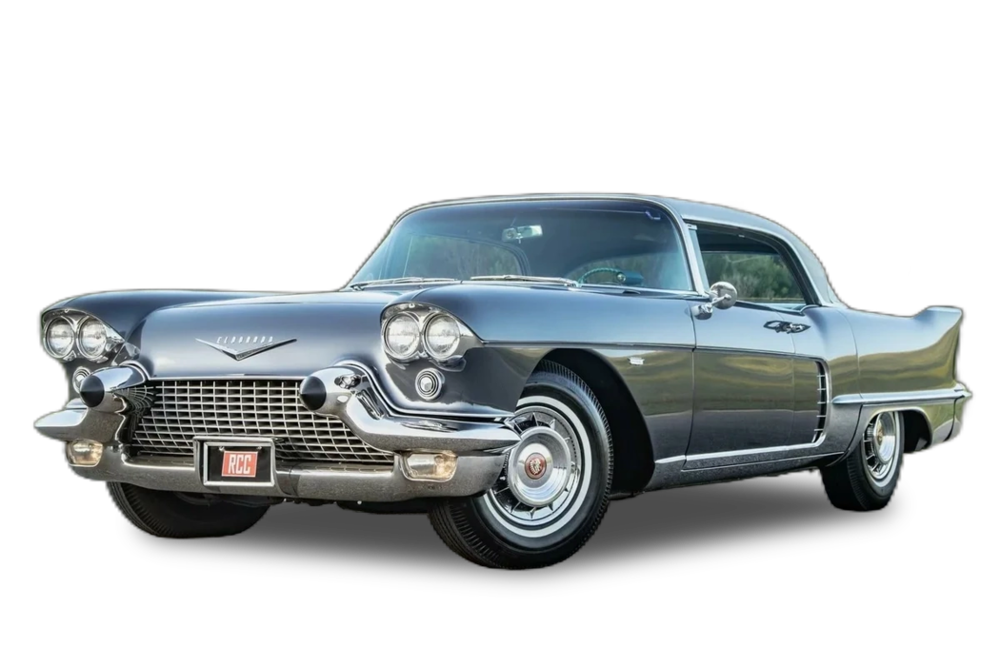

Кипр - это...
Островное государство в восточной части Средиземного моря. Официально территория Республики Кипр включает 98 % территории острова Кипр, а также близлежащие острова Агиос Георгиос, Геронисос, Глюкиотисса, Кила, Киедес, Кордилия и Мазаки.
Климат Кипра – средиземноморский умеренный, с сухим жарким летом и довольно теплой зимой. Летняя жара продолжается с середины мая до середины октября, когда температура может подниматься до +35°C в тени – впрочем, благодаря умеренной влажности жара переносится легко.
Историческое наследие
Именно Кипр может похвастаться тем, что здесь до сих пор производят сорт вина, который считается прародителем всех вин! Легендарный напиток «Коммандария», упоминания о котором зафиксированы более четырех тысяч лет назад, изготавливают из виноградных ягод ксинестери и мавро. Такая бутылочка вина в яркой и красочной упаковке станет лучшим приобретением в качестве подарка привезти домой на память о Кипре.
Удивительные пляжи
Неважно, останавливаетесь ли вы в роскошном отеле в Гаване или изучаете сельское очарование Виньялес. Не
пропустите
пляжный курортный город Варадеро, этот пляжный рай по-прежнему следует рассматривать как часть ваших
кубинских планов
путешествий.
Любимый Кадиллак Президента

22 февраля 2020 года состоялось открытие музея раритетных автомобилей в Лимассоле. Постоянно действующая экспозиция создана благодаря усилиям ветерана ралли Дими Мавропулуса. Ему же принадлежит и большая часть коллекции автомобилей. Несмотря на то, что на Кипре нет автомобильных заводов, остров имеет всемирную славу места, где находятся одни из самых сложных гоночных трасс. Ежегодно здесь проводятся ралли мирового масштаба. Первая гонка состоялась на Кипре в 1970 году. В 2017 году на острове прошло международное ралли (World Rally Championship, WRC). Одни ценители покупают раритетные машины, другие — автомобили для ралли. И если владелец сам не участвует в гонках, то нередко сдает автомобиль в аренду другим спортсменам. В центре Лимассола в районе Υψονα состоялась церемония открытия.